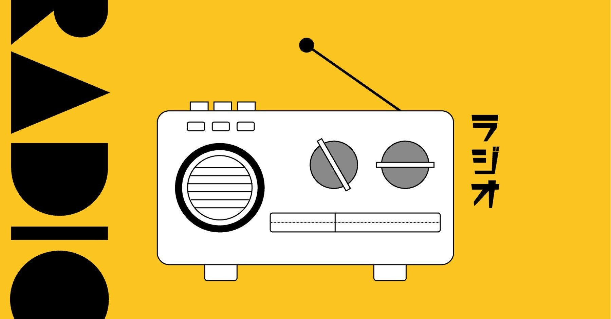

巧みなワードセンスを必要とする職業は世の中たくさんあるが、その中でも身近な存在の一つがお笑いだ。
テレビをつけたら、その世界では俳優や歌手、アイドルにスポーツ選手といった魅力にあふれた人たちがそれぞれのフィールドで活躍している。
そんな中で、お笑いを生業とする芸人たちも漫才やコントでネタを披露したり、バラエティー番組で体を張ったり、司会者として番組を引っ張ったりしている。
もちろん華やかなテレビの中で注目されることが彼らにとっての“成功”なのだろう。が、個人的好みを言ってしまうと、僕はその世界よりもラジオが主戦場の芸人が好きなのだ。
少々ラジオに毒されているのだろうか。
お笑いにおいて、ことさらワードセンスが光る芸風であるならば、そこだけにスポットライトを当てた最高の舞台がラジオだと最近思うようになっている。
ラジオにしかない魅力の一つが、リスナーからのお便りだ。
パーソナリティとの信頼関係がハガキ職人と呼ばれる人たちにはあるように思う。それはまるで掛け合いを楽しむかのようで、一般人とは思えない洒脱な感覚で聴いている僕たちを楽しませてくれる。
いつか憧れのラジオ番組にお便りを送ってみようと画策するものの、結局は何も思い浮かばず断念している。ラジオネームすら満足に考えつかないのだから、僕にはいちリスナーとして聴いている方が性に合っているのだろう。
ラジオでもゲストを迎えてトークすることもあるが、基本的にはテレビのような”分かりやすく派手で定番な企画”はラジオではできないことが多い。
でも、そんな小さな世界の中でも、些細な小話から思いもよらない話題に移り、時には笑ったり怒ったりしながら話す彼らがたまらなく好きなのだ。
そこは端から見れば閉鎖的な空間であり、初見ではとっつきにくい所もあるかもしれない。それでも毎週聴いていくうちに、気づいたら同じラジオブースの中で相槌を打っている感覚になっているのがまた不思議だ。
爽やかで聞き心地のよい昼のラジオも、アングラな香りすら漂わせている深夜ラジオも、どちらにも魅力が詰まっている。
音声しか情報のない媒体だからこそ、話している表情やラジオブースでの雰囲気を思い浮かべながら楽しむ余白がラジオにはある。そんなひと時を過ごせる時間を、この先も味わっていたい。